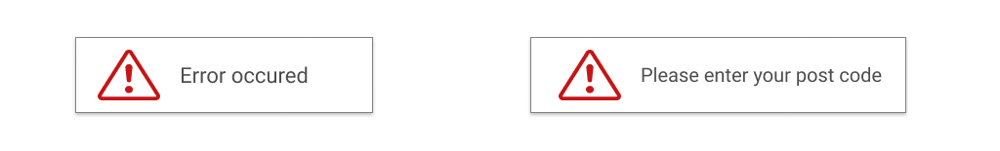

Keeping users informed
Users should always know what's going on with the system, and their position in it.
Ways to keep users informed
- Welcome messages
- Progress bars, spinners and steps
- Navigation and breadcrumbs
- Confirmation and error messages
Determinate progress bar
Indeterminate progress bar
Spinner
Breadcrumbs
Navigation
Alerts
All done! The user has been added.
Ups... Something went wrong! Please enter your first name.

By Agata Piekarczyk
Tips
- Think as users and make them feel comfortable
- Keep users informed all the time
- Your messages should be clear